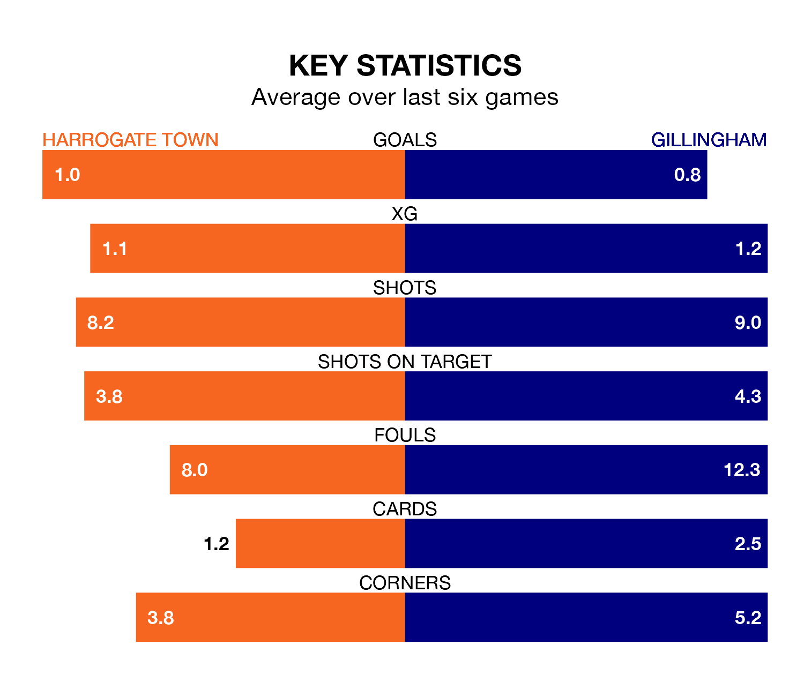

Gillingham travel to Harrogate Town on Monday in EFL League Two.
The visitors come into the game on the back of a draw in their last match, having tied with Crewe Alexandra 0-0 at home.
Harrogate also drew their last match, 1-1 against AFC Wimbledon, with their goal scored by Matty Daly.
Gillingham are seventh in the table after 41 games, of which they have won 17 and drawn nine, earning 60 points.
Harrogate are six places behind the Gills in 13th, with 15 wins and 10 draws putting them on 55 points.
Town are in mixed form in EFL League Two, with one win and four draws from their last six games.
With a win and three draws over that period, the visitors' form is slightly worse – they have taken six points from 18, compared to the home side's seven.
In the last three years, Harrogate and Gillingham have played each other on three occasions. They won one each, and they drew once.
Their last meeting was on September 9, when Gillingham won 1-0 at home.
With 39 goals in 41 games so far this season, Gillingham are the league's second-lowest scorers with 1.0 goals per game. But they are conceding fewer than average too, letting in 47 goals at a rate of 1.1 per game.
Harrogate are also below average scorers, with 1.2 goals per game, compared to a league average of 1.5. They have conceded 1.4 goals per game.
Harrogate's Matty Daly is among the league's most creative players, racking up nine assists in 34 appearances so far this season, and holding fourth spot in EFL League Two's assist charts.
For Gillingham, Tom Nichols has set up the most goals, having laid on six assists in 37 games.
Monday's match will be refereed by Simon Mather, who has taken charge of 11 EFL League Two games so far this season, issuing two red cards and booking 54 players. He has awarded three penalties.
The last Harrogate game Mather refereed was a 2-2 away draw with Morecambe on January 1. He is yet to oversee a match featuring Gillingham this season.
Updated: 10:31 (UTC), 31/03/24